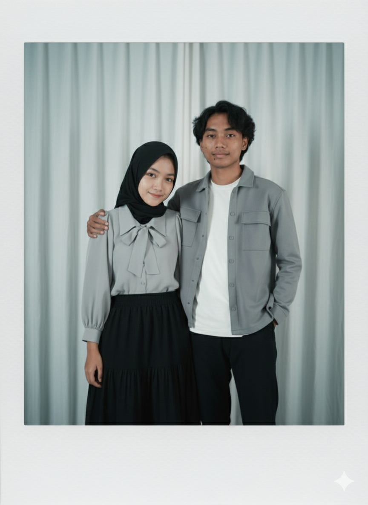
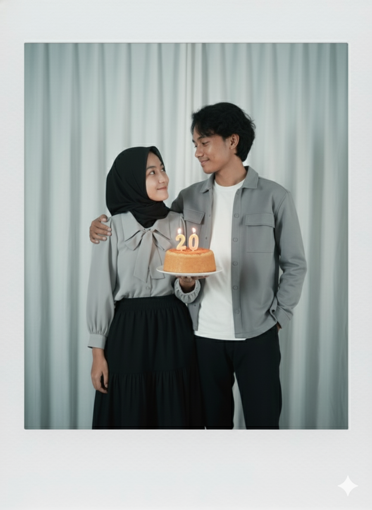

Teruntukk sayangkuu tercinta yang sudah beranjak usia ke-20 tahun 💕
Aku berdoa yang terbaik buat sayang, semoga segala doa dan keinginan ayangg tercapai.
20 tahun itu bukan hal mudah untuk ditempuh, that's why aku sangat bangga sama ayang bisa bertahan sejauh ini.
Maacii banyak ya sudah melakukan yang terbaik selama ini. Bahkan jika orang lain tidak bisa melihat perjuangan ayang, aku ada disini yang bisa melihat semua itu.
Ada aku yang akan selalu menemani ayang, walau dari kejauhan. I love you so much 💖

Ini hanyaa hadiah sederhana dari akuu untukk sayang, semoga sukaa yaaw 💞